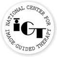

and Harvard Medical School

Slicer is an Open Source development project begun at the MIT Artificial Intelligence Laboratory (now the Computer Science and Artificial Intelligence Laboratory) and the Surgical Planning Laboratory at Brigham and Women's Hospital, a teaching affiliate of Harvard Medical School. Slicer is now in active research use at institutions around the world with contributing developers sponsored by a variety of governmental, commercial, and institutional funding sources. MIT held the initial copyright to the source code (for Slicer 1.* and Slicer 2.0-2.3, 1999-2004), and has transferred it to BWH as of Slicer version 2.4, in 2005. The text of the copyright can be found here. The SPL coordinates the ongoing development and hosts a wide range of clinical and development efforts using Slicer.
| National Institutes of Health | National Center for Research Resources | National Institute of Biomedical Imaging and Bioengineering |
| National Cancer Institute | Neuroimaging Analysis Center | National Alliance for Medical Image Computing |
|  | ||
| National Center for Image Guided Therapy | Biomedical Informatics Research Network | United States Department of Defense |
| Center for Integration of Medicine and Innovative Technology |
The main individual contributors to this joint effort are listed below.
| Area | Contributors |
|---|---|
| Overall concept | Ron Kikinis, Ferenc Jolesz, Eric Grimson, William Wells III |
| Major designer and implementer | Dave Gering (1997-1999), Lauren O'Donnell (1999-), Steve Pieper (2001-) |
| Prototype | Noby Hata (1997), Ron Kikinis |
| OpenMR interface | Arya Nabavi (1998-1999), Ferenc Jolesz |
| Measurement tools | William Lorensen (GE), Peter Everett (SPL), Krishna Yeshwant (SPL) |
| Robot simulation tools | Noby Hata, Oliver Schorr |
| 3D connectivity algorithm | Andre Robatino |
| MI registration | William Wells III |
| Virtual endoscopy tool | Delphine Nain (MIT CSAIL) |
| DICOM functionality, robot control, volume rendering | Attila Tanacs (Johns Hopkins University) |
| Cryotherapy planning | Torsten Butz (EPFL) |
| Architecture | Michael Halle (SPL) |
| EMSegmenter | Kilian Pohl (MIT CSAIL) |
| Tetramesh, volumeMath, developer.tcl | Samson Timoner (MIT CSAIL) |
| Print header | Mark Anderson (SPL) |
| Training and Download requests | Marianna Jakab (SPL) |
| Model Hierarchies | Arne Hans (SPL) |
| Application development | Steven Haker (SPL) |
| Craniofacial | Krishna Yeshwant (SPL) |
| FreeSurfer Volume Readers | Kevin Teich (MGH), Nicole Aucoin (BWH) |
| Nightly Builds, Testing, QA | Kathryn Hayes (BWH) |
| Training Materials | Sonia Pujol (BWH) |
| DTI Tools | C. F. Westin, Lauren O'Donnell, Raul San Jose Estepar (BWH) |
| fMRI Tools | William Wells, Wendy Plesniak, Haiying Liu (BWH) |
We are sincerely thankful for the grants and fellowships supporting this project, and we wish to acknowledge them here.
| Contributor | Supporter |
|---|---|
| David Gering | GE Medical Systems |
| Lauren O'Donnell | National Science Foundation Graduate Research Fellowship |
| Ron Kikinis | NIH grants P41 RR13218, P01 CA67165, and R01 RR11747; ERC 9731748 |
| William Wells III | Whitaker Foundation Biomedical Engineering Research Grant |
| W. Eric L. Grimson | NSF grant IIS-9610249, ERC 9731748 |
| Attila Tanacs | ERC 9731748 |
| Kevin Teich | NIH-NCRR grant 3 P41 RR14075-03S1 |